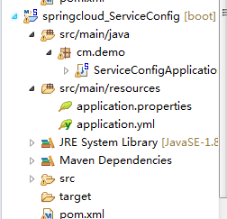
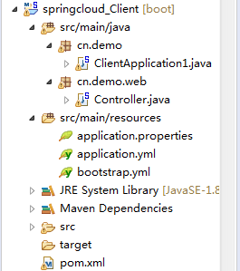
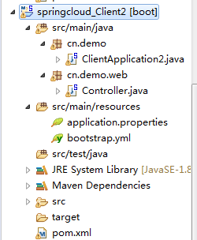
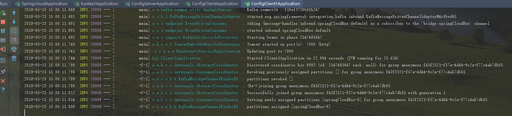
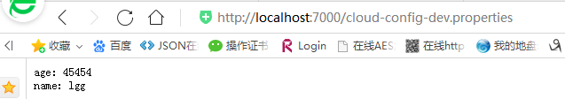
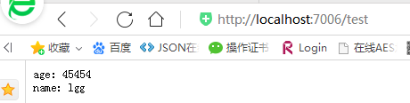
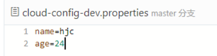
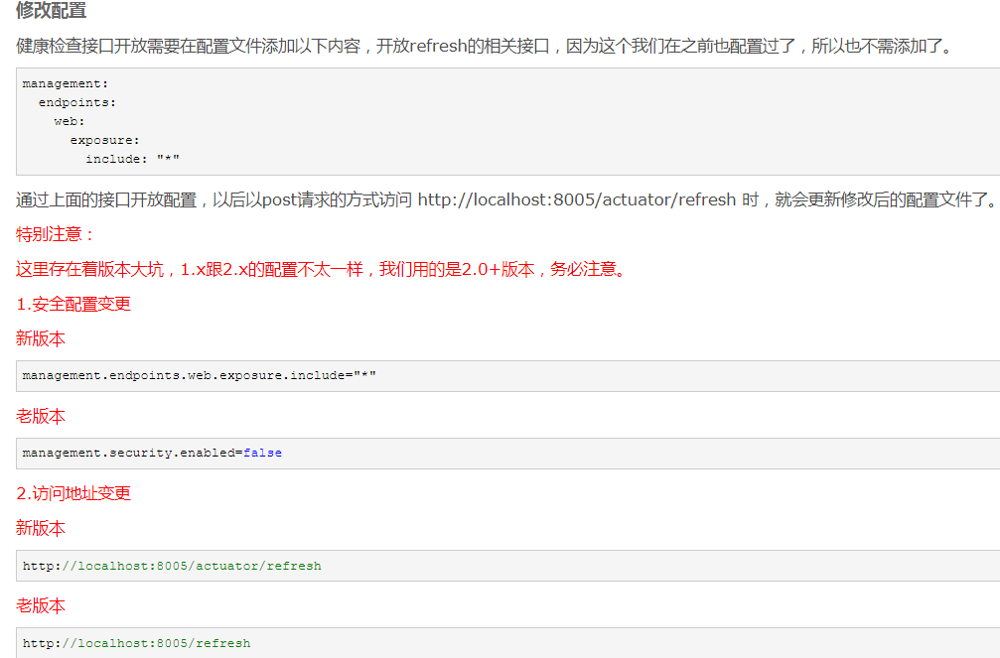
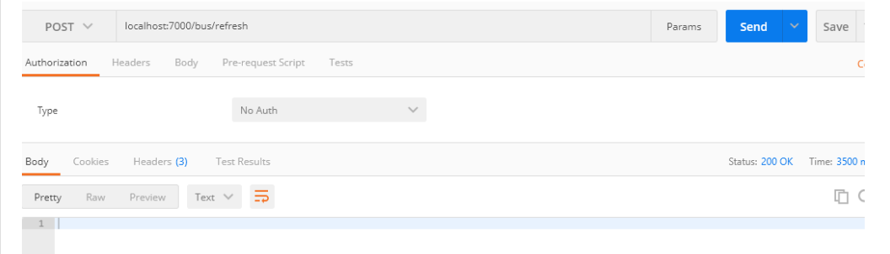
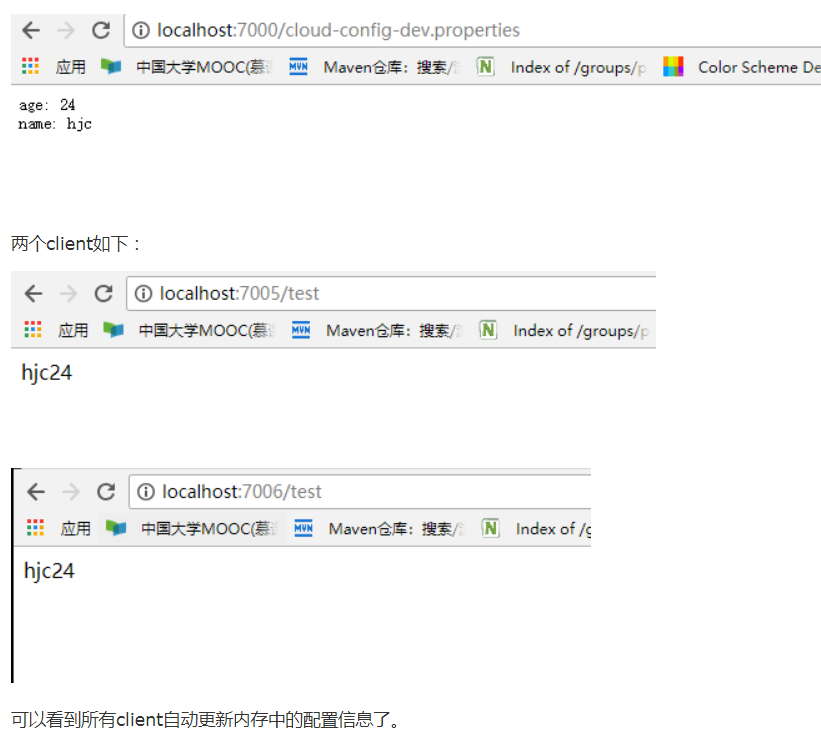

好了现在我们接着上一篇的随笔，继续来讲。上一篇我们讲到，我们如果要去更新所有微服务的配置，在不重启的情况下去更新配置，只能依靠spring cloud config了，但是，是我们要一个服务一个服务的发送post请求，
我们能受的了吗？这比之前的没配置中心好多了，那么我们如何继续避免挨个挨个的向服务发送Post请求来告知服务，你的配置信息改变了，需要及时修改内存中的配置信息。
这时候我们就不要忘记消息队列的发布订阅模型。让所有为服务来订阅这个事件，当这个事件发生改变了，就可以通知所有微服务去更新它们的内存中的配置信息。
这时Bus消息总线就能解决，你只需要在springcloud Config Server端发出refresh，就可以触发所有微服务更新了。
Spring Cloud Bus除了支持RabbitMQ的自动化配置之外，还支持现在被广泛应用的Kafka。在本文中，我们将搭建一个Kafka的本地环境，并通过它来尝试使用Spring Cloud Bus对Kafka的支持，实现消息总线的功能。
window下安装kafka和zooker，超详细：https://blog.csdn.net/weixin_33446857/article/details/81982455
kafka：安装下载教程网址（CentOS Linux）：https://www.cnblogs.com/subendong/p/7786547.html
zooker的下载安装网址：https://blog.csdn.net/ring300/article/details/80446918
项目： 一个服务端。2个客户端。

pom文件：
<project xmlns="http://maven.apache.org/POM/4.0.0" xmlns:xsi="http://www.w3.org/2001/XMLSchema-instance" xsi:schemaLocation="http://maven.apache.org/POM/4.0.0 http://maven.apache.org/xsd/maven-4.0.0.xsd">
<modelVersion>4.0.0</modelVersion>
<groupId>com.demo</groupId>
<artifactId>springcloud_serviceClient2</artifactId>
<version>0.0.1-SNAPSHOT</version>
<parent>
<groupId>org.springframework.boot</groupId>
<artifactId>spring-boot-starter-parent</artifactId>
<version>2.0.3.RELEASE</version>
<relativePath/>
</parent>
<properties>
<project.build.sourceEncoding>UTF-8</project.build.sourceEncoding>
<project.reporting.outputEncoding>UTF-8</project.reporting.outputEncoding>
<java.version>1.8</java.version>
<spring-cloud.version>Finchley.RELEASE</spring-cloud.version>
</properties>
<dependencyManagement>
<dependencies>
<dependency>
<groupId>org.springframework.cloud</groupId>
<artifactId>spring-cloud-dependencies</artifactId>
<version>${spring-cloud.version}</version>
<type>pom</type>
<scope>import</scope>
</dependency>
</dependencies>
</dependencyManagement>
<dependencies>
<dependency>
<groupId>org.springframework.cloud</groupId>
<artifactId>spring-cloud-starter-eureka-server</artifactId>
<version>1.3.4.RELEASE</version>
</dependency>
<dependency>
<groupId>org.springframework.cloud</groupId>
<artifactId>spring-cloud-starter-bus-kafka</artifactId>
<version>1.3.2.RELEASE</version>
</dependency>
<dependency>
<groupId>org.springframework.cloud</groupId>
<artifactId>spring-cloud-starter-config</artifactId>
<version>1.4.0.RELEASE</version>
</dependency>
<dependency>
<groupId>org.springframework.cloud</groupId>
<artifactId>spring-cloud-config-client</artifactId>
<version>1.4.0.RELEASE</version>
</dependency>
<!--Spring Boot Actuator，感应服务端变化-->
<dependency>
<groupId>org.springframework.boot</groupId>
<artifactId>spring-boot-starter-actuator</artifactId>
</dependency>
<dependency>
<groupId>org.springframework.boot</groupId>
<artifactId>spring-boot-starter-web</artifactId>
</dependency>
<dependency>
<groupId>org.springframework.boot</groupId>
<artifactId>spring-boot-starter-test</artifactId>
<scope>test</scope>
</dependency>
</dependencies>
</project>client1的配置文件要改为bootstrap.yml，因为这种配置格式，是优先加载的，上一篇随笔有讲过，client2的配置如下：
server:
port: 7008
spring:
application:
name: config2
cloud:
config:
label: master
#启动什么环境下的配置，dev 表示开发环境，这跟你仓库的文件的后缀有关，比如，仓库配置文件命名格式是cloud-config-dev.properties,所以profile 就要写dev
profile: dev
name: cloud-config
discovery:
enabled: true
#这个名字是Config Server端的服务名字，不能瞎写。
service-id: CONFIG-SERVER
management:
#是否需要权限拉去，默认是true,如果不false就不允许你去拉取配置中心Server更新的内容
security:
enabled: false
#注册中心
eureka:
client:
service-url:
defaultZone: http://localhost:8001/eureka/启动类：
package cn.demo;
import org.springframework.boot.SpringApplication;
import org.springframework.boot.autoconfigure.SpringBootApplication;
import org.springframework.cloud.client.discovery.EnableDiscoveryClient;
@SpringBootApplication
@EnableDiscoveryClient
public class ClientApplication2 {
public static void main(String[] args) {
SpringApplication.run(ClientApplication2.class, args);
System.out.println("启动成功!");
controller类：
package cn.demo.web;
import org.springframework.beans.factory.annotation.Value;
import org.springframework.cloud.context.config.annotation.RefreshScope;
import org.springframework.web.bind.annotation.GetMapping;
import org.springframework.web.bind.annotation.RequestMapping;
import org.springframework.web.bind.annotation.RequestParam;
import org.springframework.web.bind.annotation.RestController;
@RestController
@RefreshScope
public class Controller {
/*@Value("${spring.cloud}")
private String config;
@GetMapping("/test/config")
public String test() {
return config;
}*/
@Value("${name}")
private String name;
@Value("${age}")
private Integer age;
@RequestMapping("/test")
public String test(){
return this.name+this.age;
}
}接着将client2中的的代码基本和client的一样，只是暴露服务的端口不同。
然后：
把zooker，kafka启动；（标题下面链接）
把前面的工程，1个注册中心，一个springcloud-config-server,两个springcloud-config-client,springcloud-config-client1启动起来，

可以看到springcloudBus是在0分片上，如果两个config-client启动都出现上面信息，证明启动成功了。
访问：http://localhost:7000/cloud-config-dev.properties

再访问两个client,如下：
http://localhost:7006/test http://localhost:7008/test

好了，好戏开始了，现在我们去git仓库上修改配置中心的文件，将年龄改为24，如下：

接下来，我们我们用refresh刷新配置服务端7000配置，通知两个client去更新内存中的配置信息。用postman发送localhost:7000/bus/refresh,如下：
注意：spring1.x和spring2.x 刷新的路径不一样。

----------------------------------------------------
看一下返回的结果：

可以看到没有返回什么信息，但是不要担心，这是成功的通知所有client去更新了内存中的信息了。
接着我们分别重新请求config-server,两个client,刷新页面，结果如下：

到目前为止，上面都是刷新说有的配置的信息的，如果我们想刷新某个特定服务的配置信息也是可以的。我们可以指定刷新范围，如下：
上面的例子中，我们通过向服务实例请求Spring Cloud Bus的/bus/refresh接口，从而触发总线上其他服务实例的/refresh。但是有些特殊场景下（比如：灰度发布），我们希望可以刷新微服务中某个具体实例的配置。
Spring Cloud Bus对这种场景也有很好的支持：/bus/refresh接口还提供了destination参数，用来定位具体要刷新的应用程序。比如，我们可以请求/bus/refresh?destination=服务名字:9000，此时总线上的各应用实例会根据destination属性的值来判断是否为自己的实例名，
若符合才进行配置刷新，若不符合就忽略该消息。
destination参数除了可以定位具体的实例之外，还可以用来定位具体的服务。定位服务的原理是通过使用Spring的PathMatecher（路径匹配）来实现，比如：/bus/refresh?destination=customers:**，该请求会触发customers服务的所有实例进行刷新。